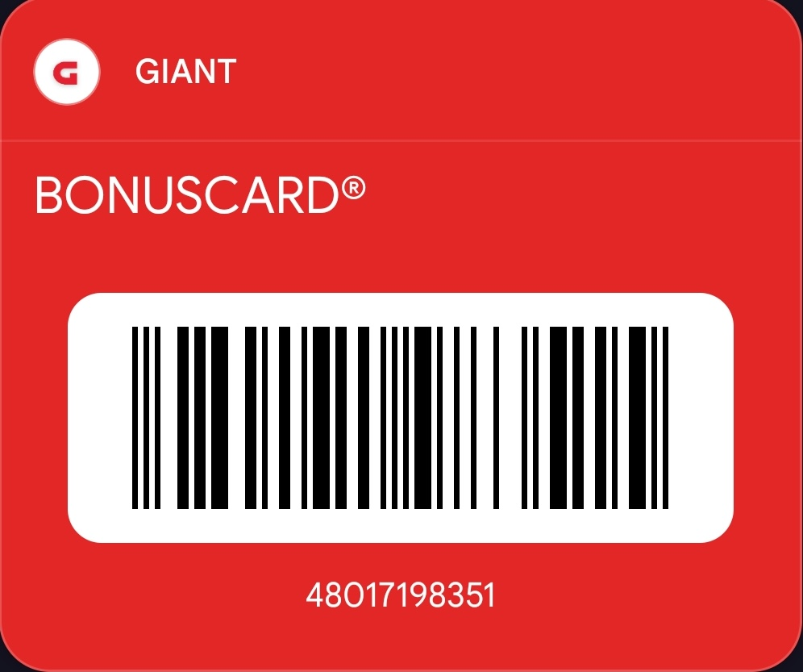

Who am I ?
I am Pruthviraj Munadrgi, graduated this June 2024 as 'Masters in
computer Science'
I am only helping because, when I came here alone, not knowing anyone,
didn't know any WhatsApp groups existed, left alone with lots of
questions. until 4 months, I met few amazing people.
more about me here
your contribution to this page is most welcome
here
if you have a question, create an
new issue
Where to Live
There are several housing options available for students:
keep in mind that There is no commission for finding housing
there will be initial applicaton fee, you'll be asked to pay the first
month rent, last month rent and security deposit(it will be refunded
at the end)
yes, you can share a room with another person, but they have to be
added in the lease document. This may cost an additional $50 in rent.
but it is safe to include them in the lease document. If The
management gets to know they you had a person living under the same
roof, without having them on the lease, will lead to fine or
termination of the lease. (yes this happened, the fine was huge, then
they had to vacate the house)
there are mainly 3 official Drexel affiliated housing 🤮 Chestnut
Square (I lived here initially,
Here is my personal review, give a 👍), The Summit and University Crossings. I would not recommend that
test text
-
Zillow Real estate company. Websites
zillow.com has a listing of
apartments.
-
spotted is what I used, I lived in 3836 Spring
Garden, Philadelphia
spotted in universitycity
request a tour and apply.
things to consider while looking for a apartments
-
Proximity to Drexel University Consider how close
the apartment is to the Drexel University campus. Living within
walking distance or a short commute can save time on transportation.
-
Safety Research the safety of the neighborhood.
Look for low crime rates and safe streets. There are police patrols
in some areas
-
Most of the students live in Powelton, Pearl St, Baring St, Hamilton
St, Spring Garden St (I lived here), Brandywine St and Haverford
Ave. Try to stay within 39 th street, It gets shady beyond this
-
Rental Costs Determine your budget and look for
apartments that fit within it. Consider not only the rent but also
utilities (water, electricity, internet) which may or may not be
included. I lived in 3bed, 3bath, I paid $630 only for rent
-
Furnished vs. Unfurnished Decide if you prefer a
furnished or unfurnished apartment. Furnished apartments may be
convenient for international students who don't want to buy
furniture immediately.
-
Local Services and Shops Look for nearby grocery
stores, pharmacies, restaurants, and other essential services.
Convenience can make daily life easier.
Crime
There is another web page to see live crime like armed robbery and
prisoner escpaed (kitten stuck on a tree)
citizen app
app is also avalable to give live updates
local transportation
most used is Drexel shuttle
they have few fixed routes
official stite :
here
-
Indego – Philly's Bike Share it is a subscription
based bybycle rental. both regular bycycle and electric powered
bybycle is avalable.
Indego pass i
feel the Subscription is a little expensive. but good thing you ride
and park it, we dont have to worry about bycycle Maintenance.
- uber you know this
- Lyft just like uber
Public transportation (paid)
-
SEPTA Subway (Market-Frankford Line) $2 hop in anywere, drop out
anywere
-
Runs east-west through Philadelphia, connecting major
neighborhoods and transit hubs.
- Links to regional rail lines and other SEPTA services.
-
SEPTA Subway (Broad Street Line)
-
Runs north-south through Philadelphia, serving key areas
including sports complexes and city hall.
-
Provides connections to the Market-Frankford Line and regional
rail.
-
SEPTA Regional Rail
-
Connects Philadelphia to suburbs and surrounding areas with
multiple lines serving various destinations.
-
Includes routes such as the Lansdale/Doylestown Line and the
Wilmington/Newark Line.
-
SEPTA Bus Services
-
Offers extensive coverage throughout Philadelphia and
surrounding regions with numerous routes.
-
Provides access to neighborhoods, shopping areas, and major
transit centers.
-
SEPTA Trolley Services
-
Operates on four lines (Routes 10, 11, 13, 15) connecting
neighborhoods in Philadelphia and parts of Delaware County.
- Provides a vintage-style, surface-level transit option.
safety
Yes it is shady sometimes
ideal to carry a pepper spray
travel in group (follow the script from movie Stree 2018)
Approximate expenditure
the below cost is per head
-
house rent: $630 🏠(one room in 3 bed, 3 bath
apartment)
-
electricity: $35 (peco, we get total bill from $60
to $130 in winter, It gets very cold here.")
-
home internet: $20 🌐 (Verizon internet router, we
took $60 plan)
-
mobile plan: $25 (Verizon, AT&T, T-Mobile, Mint
Mobile)
-
groceries: $150 to $200 (🥕🫛🥔, butter, paneer 🧈
and Chicken 🍗) (Invite for dinner, I love to learn cooking)
total will fall around $870+ (excluding clothes 🥾 shopping and
ice-cream 🍧)
check if the mobile operator has student plan.
Verizon, AT&T, T-Mobile will have offers on mobile device where if
you sign a contract for a year, they will give you a brand new phone
(sim locked ofcource) but works like a regular phone, works out
cheaper than buying a new phone 📱
if you live far, $2 for septa (bus, trolly, metro) every time you get
on and change to another
Where to Find Part-Time Jobs
legally you are supposed to work on-campus jobs only
you can only wotk for 20 hours a week as a full time student
usual minimum pay is $13 can go up to $18 for hour
-
Teaching assistant (COURSE ASSISTANT): I have only
seen for Computer science (CS, AI, ML) studnts, I do not know for
other cources. open the link, at the last line
this application is for course assistants only
You will need a recommendation from Drexel faculty. works best if
you apply after your first quarter, so that you can write an email
to the faculty saying "hello professor, i took your course, i would
likr to apply for course assistant position, your recommendation
will be helpful, bla, bla bla ".
-
as a student We can also work as "student worker" at campus dining,
there is a companu called as Aramark They hire
people to work (they do background checks, HR will look at your
papers and all). here is how and were to apply, we live in
'university city' its an local area like 'Kuvempunagar', the pin
code is 19104. you need to use the term called as 'Student Worker'
link to CAREER aramark with filter
-
Starbucks: located at '65 N 34th St, Philadelphia,
PA 19104'.
apply here for the post called 'student worker'
(pre order for coffee
here
)
what next after securing a part time job
Lot of people are asked if its too much to take on while being in
first quarter
I would strongly suggest apply and get the job. then you will have
optin to take up the shift or not
you can choose not to take shift if you have exams coming up or
assignments are due or need time for a going on a date 😏
Procedure for Getting a Social Security Number (SSN)
-
Eligibility You must have secured on-campus
employment or a co-op position to apply for an SSN. The SSN is used
to report your wages to the government and determine eligibility for
social security benefits.
-
Job Offer Letter Obtain a job offer letter from
your employer, which should include:
- Employer’s name
- Number of hours per week
- Employment start date
-
Request SSN Support Letter Email your job offer
letter to the International Students and Scholars Services (ISSS) at
Drexel (isss@drexel.edu) to request a support letter for your SSN
application.
-
Application Process
-
Visit the Social Security Administration (SSA) office with your
job offer letter, SSN support letter from ISSS, passport, visa,
I-94, and I-20 or DS-2019.
- Complete the SSN application form (SS-5).
-
you will need to carry
- offer letter
- passport
- I20
- Lease document (for address verification)
- support letter (from ISSS)
- college addmission letter
-
Processing Time It may take up to three weeks to
receive your SSN after applying. It will come to your house mail
box.
Importance of Credit Cards
-
Building Credit History: Establishing a credit
history in the U.S. is crucial for future financial decisions, such
as renting an apartment, buying a car, or applying for loans.
-
Convenience and Security: Credit cards offer a
secure and convenient way to manage your finances, with the added
benefit of fraud protection.
-
Financial Benefits: Many credit cards offer
rewards, such as cash back, travel points, or other perks that can
be beneficial for students
I started using Discover card as my first credit card, as it did not
have ant previous record of credit score
and one of my senior was kind enough to share a referal code, I got
$100 so did they
this offer still exists
use this link
https://refer.discover.com/s/pruthvigudduraj9
each of us will get $100 (sign up bonus for you, referal bonus for me)
once we get credit score, we can apply for better credit cards (may
take 9 months to ge the first score).
for more information, its called FICO Score.
Where to Get Groceries
Here are some grocery stores near Drexel University:
-
Mario's Market Food Pantry:Free food stuff 🎉, it
is an on-campus food pantry at Drexel University, designed to
support students, staff, and faculty experiencing food insecurity.
But keep in mind that 99% of the food is from donation, they will be
at the border of experation, so take only what you need, consume it
within a week, come back again for more stuff.
The pantry offers a variety of food items, including non-perishable
canned and boxed goods, as well as refrigerated food.
The inventory is supported by University budgets and early
fundraising efforts.
Address: Rush Building
30 N 33rd St, Philadelphia, PA 19104 . they restock on thursday, I usually get the canned food like
'canned tomato' for my curry and rasam (with rice), canned Tuna
(fish), small packs of rice is also avalable.
official information
-
International Foods & Spices:popularly knos as
'IFS', This grocery store stocks Indian & South Asian,Address:
4203 Walnut St, Philadelphia, PA 19104 . its closed on Tuesday
-
GIANT Heirloom Market:Address:
3401 Chestnut St, Philadelphia, PA 19104 . bread, basic vegitables, chips, sause.
-
one of a farmers market: it is a very stall beside
walking path. like our local indian fruit stall. you will get fresh
fruits and berries
.Address:
3998-3982 Locust Walk, Philadelphia, PA 19104 . tomato and cucuber is very cheaper compared to other stores
carry cash .
-
GIANT: the bigger and my personal Favorite.
60 N 23rd St, Philadelphia, PA 19103
huge super market, has more verity (may Favoriteplace for shoping
grocerie )
-
Dana Mandi 2: Massive Indian grocerie store
325 S 69th St, Upper Darby, PA 19082
reaching here is little tedious, but far better variety
-
ACME Markets: store is big, but some items may have
added tax while billing.
4001 Walnut St, Philadelphia, PA 19104
I felt its a little expensive
-
Makkah Market:popular for Halal food and
meat, you will also get spices, herbs (I havent seen vegitables here
).Address:
4249 Walnut St, Philadelphia, PA 19104 . (please invite me for Biryani).
-
Patel Brothers: Indian Groceries, very big, but you
will need a car to reach here because it is very far.
1907 Street Rd, Bensalem, PA 19020
you name it, they have it. frozen chikku, shreded coconut, dosa
batter, banana leaf, tinned jackfruit and many more
while shopping in Giant I strongly recommend you to signup for a bonus
card (create a free account)
you will get a barcode, scan the barcode before you scan your item.
(there will be price difference for vegetables and fruits)
else you can just use the below barcode (its free to create an
account, there is no use of the app once you create account)

Where to Get other stuff (cloths, pans & utensils)
most common plce to shop for students (with our budget😅)
-
Ross Dress for Less:Clothing store, Address:
701 Market St, Philadelphia, PA 19106 . popplar for shoe and girls purse
-
Burlington:Address:
833 Market St, Philadelphia, PA 19107 . I love kitchen utensils here, frying pan
-
Fashion District Philadelphia: cluster of shops,
H&M, Primark and many. Address
901 Market St, Philadelphia, PA 19107
-
Dollar Tree: most items for $1.25. Address
2601 W Girard Ave, Philadelphia, PA 19130
cloth hanger, Aluminum Foil, paper plates, Ceramic bowl, Ceramic
plate
Where to eat out
Here are some places for social gathering:
-
Amma's South Indian Cuisine:best for dine in, good
south indian food. Dosa, veg and non-veg tali. Address:
1518 Chestnut St, Philadelphia, PA 19102 . its close to city hall
-
Virasat Haveli: my personal Favorite. Better North
Indian food. I recommend "Chicken tandoori platter". Address
4051 Market St, Philadelphia, PA 19104
ask for 'Indian spicy' for each dish for our spice
-
Thanal Indian Tavern: good veg options. recommended
"spicy gobi manchuri". Address
1939 Arch St, Philadelphia, PA 19103
-
Fadó Irish Pub: there is no entry fee (you will
need passport for age verification), better crowd on weekends, there
will be music and you can dance. Address
1500 Locust St, Philadelphia, PA 19102
mostly english music
-
Morgan's Pier: place to hangout (drink and chill)
Address:
221 N Christopher Columbus Blvd, Philadelphia, PA 19106 . you will be sitting next to Delaware River which seperates
Philadelphia and New Jersey.
Health Insurance
Drexel University offers a health insurance plan through
UnitedHealthcare.
Mandatory Health Insurance
All full-time students at Drexel University, including international
students, are required to have health insurance. You must either
enroll in the Drexel-sponsored health insurance plan or provide proof
of comparable coverage to waive the university plan
Further reading here
In other words, here's how it works, you buy an insurance, Drexel says
its valid or not, If it is valid and they accept it, you're good to
go. If not, they will create more complications.
Drexel-Sponsored Health Insurance Plan
Drexel University offers a health insurance plan through
UnitedHealthcare, known as the Dragon Plan. This plan provides
comprehensive coverage, including emergency and non-emergency care,
inpatient and outpatient services, mental health and substance abuse
treatment, and coverage for pre-existing conditions
Further reading here
Costs
The annual cost for the Dragon Plan for the 2023-2024 academic year is
$2,958 for individual students. Additional costs apply if you need
coverage for dependents
Alternative Health Insurance Options (I am not recommending them, just
to give you guys an idea)
when in doubt, always email the drexel health, to check if this falls
under requiremnet before purchase
Several providers offer health insurance plans that may meet
Drexel's requirements and could be more affordable than the
university-sponsored plan:
-
I came across another
wellaway
-
Visitor Insurance:
Offers various plans for international students that can be cheaper
than university-sponsored plans. They provide comprehensive coverage
and can assist with the waiver process
-
International Student Insurance (ISI):
Provides reliable and affordable plans designed to meet visa
requirements and university standards. They offer multiple plan
levels to suit different budgets and needs
Waiving the Drexel Plan
If you choose to use an alternative health insurance plan, it must
meet specific criteria set by Drexel University. The alternative plan
must:
-
Provide coverage for emergency and non-emergency care in the Drexel
area.
- Include mental health and substance abuse coverage.
- Offer a policy year maximum of at least $500,000.
-
Be provided by a company licensed to do business in the U.S. with a
U.S. claims payment office and phone number.
Applying for a Waiver
To apply for a waiver, you need to submit proof of your alternative
insurance plan to Drexel University by the specified deadline. The
university will review your plan to ensure it meets their
requirements. If approved, you will not be enrolled in the
Drexel-sponsored plan, and the premium will not be charged to your
student account
By understanding these requirements and exploring your options, you
can make an informed decision about your health insurance coverage
while studying at Drexel University.
I took Drexel insurence, it was hassle-free
I am a little free now, not come to Philadelphia yet, what to do ?
here are the things I would recommend
-
map your courses:I would strongly suggest you to
plan all your coueces, Create a map, Which subject to take in which
quarter, Using term master schedule. link:
Term Master Schedule . keep an eye, course may have prerequisite
-
Please don't be
selfish Selfish once you
come here. let's embrace inclusivity and collaboration, fostering a
community where sharing and connection thrive.
Courses related questions
close perspective from Master in Computer Science
-
Q: Can we add or drop courses after we submit it:
You can drop any time (it's called web-drop) till the class start
There is also one more You can drop out of class after first class
(one class) suppose you didn't like it or some other reason
Worst case: there is one more option called 'course withdrawal',
doing this when student are 100% sure student are gonna get F, doing
so the student will lose mostly 80% of course fee or full (I don't
know), but not a F, neither the credits will be counted.
-
Q: I am planning to take different courses and wanted to know if
I can, what other option do I have :
You can If your pre requsits are wavered You won't have restrictions
to take other cource
But by the end of your masters you will need to take all the
required coursed
For example If you are persuing masters in computer science
You should meet all your course requirements by the end (after 1.5
year course ) The order Dosent matter
You will also have to have 45 credits minimum
Keep in mind that some courcces are not given In perticualr
quarters
(I would recommend taking different, last time not many took
computer networks, but it was a core, there were not many seats in
the class for all the students The other subject was bad 🤮 )
-
Q: after registering for courses when do we have to pay the fees
for the quarter?:
Within 2 weeks of registration.
Else there will be a small fine
Don't worry
This fine can be wavered on the first fee
Once you come here, go to office and tell that it's your first time
paying fee You can get it wavered
-
Q: how do we know how much to pay? Like where is it
mentioned?:
3 courses will be around $13,000
It will be on the Drexel One Connect website.
Billing+Financial Aid -> Account Balances and eBills -> Current
Balances
-
There are few chances if the cource don't have minimum
registration, they may cancel the cource for that quarter
Q: then what do we do:
No (you don't have to worry much at this point )
You'll get a
mail if the cource is canceled
-
Q: What to do if the class is full ?:
apply to waiting list
you will receive a mail sayig there is a slot
you will have 24 hours to register, else your waiting spot goes to
next person
yes, there is a high chance you will get if you are in waiting list
-
Q: did you buy any textbooks or reference books for any of the
courses?:
No.
Sometimes the professors will only give the pdf (very rare that you
will have to use textbook )
Mostly its Google search, Papaer reading
Youtube and other media
-
Q: Operating systems or computer network (more doable preferred)
?:
CS 543 Operating Systems (I have heard its bad)
CS 544 Computer Networks too good, taught by Brian Mitchell (he is
one of my favorite in whole Drexel life 🤩)
-
Q: CS570 is wavered for me as i am from CS background, can it be
counted:
Yes, it can be “UNWAVERED” and will be counted for credits
you need to drop a mail to academic advisor
-
Q: What gpa is easily achievable:
4 is max
You have to keep 3 or above
some course are sh*t
3.45 is doable (for a back bencher like me )
-
Q: how is plagiarism in Drexel:
Here in Drexel, plagiarism is taken very seriously
So not take any other assignment
never ever share the assignment
not even a small chunk of code
wll all have 2 strikes for plagiarism
for the first strike its noted and reported 😠
but for the second strike, deported 😡 (zero tolerance)
I am super super super super super super serious
-
Q: QestionQuestion:
AnswerLine1
AnswerLine2
AnswerLine3
AnswerLine4
AnswerLine5
Additional miscellaneous questions
para text
-
what for breakfast ?We usually have Cheerios
Cheerios . with milk. Peanut butter and bread. oats.
-
milk is bad compared to India the milk has no
taste, its like water.
Giant Whole . dosent have milk smell either.
-
vegetables:less variety. what I miss the most is
Okra, bitter gourd, Drumstick, Jackfruit, curry leaves. dont worry,
some of it is available in International Store.
-
paneer (milk product): is available in Indian
store, but its far more expensive than chicken.
-
Clothes washing: most apartment have in unit washer
and dryer. I felt its nice because it takes 30 minutes for washing
and another 60 minutes for drying. in other words, I can wash my bed
sheets in the morning and use the same sheets the same afternoon.
(crisp dryed). But the down side is if the cloths are not filly
dried, its difficult to dry them in the room, due to AC the cloths
wont dry. (If it is a little damp, I will just use iron box 😅)
-
Plants in the room: I love plants, but not many
indoor plants survive in the room, it is rare that we open the
windows, limited sunlight. as far as i have seen there are very few
plants which survive indoor.
- POTHOS (Epipremnum aureum) commonly knows as money plant
- SPIDER PLANT (Chlorophytum comosum) one of my favorite
in other words, less 🪴
-
Downloading files using torrents is discouraged here.
some of my friends recived a notice saying "copyright infringement
and may include a request to cease illegal downloading, or further
legal action might be taken. Bla Bla Bla ..."
-
Time zone Philadelphia is in the Eastern Time Zone
(ET) of the United States. This time zone is 5 hours behind
Coordinated Universal Time (UTC-5)
India, on the other hand, uses Indian Standard Time (IST), which is
UTC+5:30.
So, the time difference between Philadelphia and India varies
depending on whether Daylight Saving Time is in effect in
Philadelphia:
-
During Standard Time (roughly early November to
mid-March):Philadelphia is 10 hours and 30 minutes behind India.
-
During Daylight Saving Time (roughly mid-March to early
November):Philadelphia is 9 hours and 30 minutes behind India.
For example, if it's 12:00 PM (afternoon) in Philadelphia, it would be
10:30 PM or 9:30 PM in India, depending on whether Daylight Saving
Time is in effect.
Welcome again
Starting your journey as an international student can be both exciting
and daunting.
I understand the challenges international students face
It can feel incredibly lonely and homesick, especially coming from a
close-knit family in India.
Having completed my master's at Drexel University, I can relate to
these feelings.
It's important to remember that you're not
alone in this experience. Many of us have faced similar challenges and
have found ways to cope and thrive.
We are here to support you
through this transition.
Don't hesitate to reach out if you
need someone to talk to or if you need help navigating this new
chapter.
Together, we can make this journey more enjoyable.
You should be proud of yourself, you have come this far, you will rock
it.
drop an email pruthvirajam95@gmail.com no formlities "hi I am feeling
low" is enough (I may not be there in Philadelphia, I can definalty
connect you with people) as a friend.
official help is also avalable here at
Counseling Center
I know, it may not make much sense, day light is messed up, people
don't talk, they get attitude issues. The overall experience can feel
like a rollercoaster ride—full of ups and downs.
THE END
If you have reached till here means you found this information
helpful.
The content keeps updating, thats why I have put a last update counter
on top of the page.
thank you, I do not expect anything back apart from your blessing 🙏
-
because I have just finished my Masters in Computer Science in June
2024.
and currently looking for a full time job. no positive ressponse
yet. all I need your blessing. thank you .
-
any leads for full job, I am here pruthvirajam95@gmail.com 🤞🏻 thank
you in advance
Your contributions with more answers to this page are most welcome
(fork, update, push)
here
if you have a question, create an
new issue